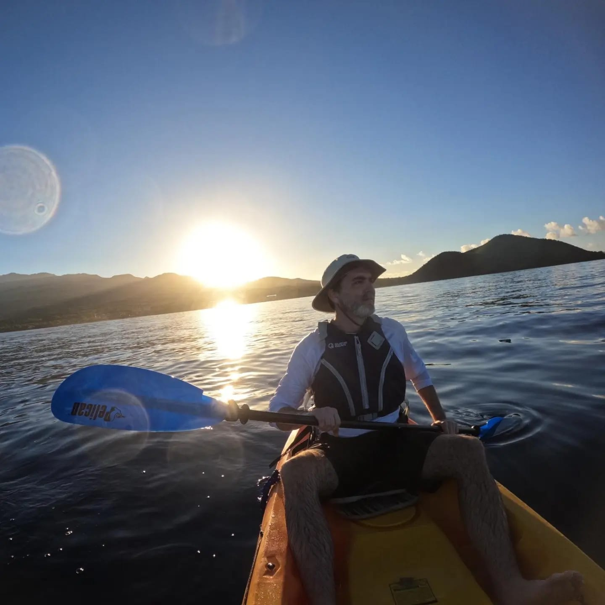
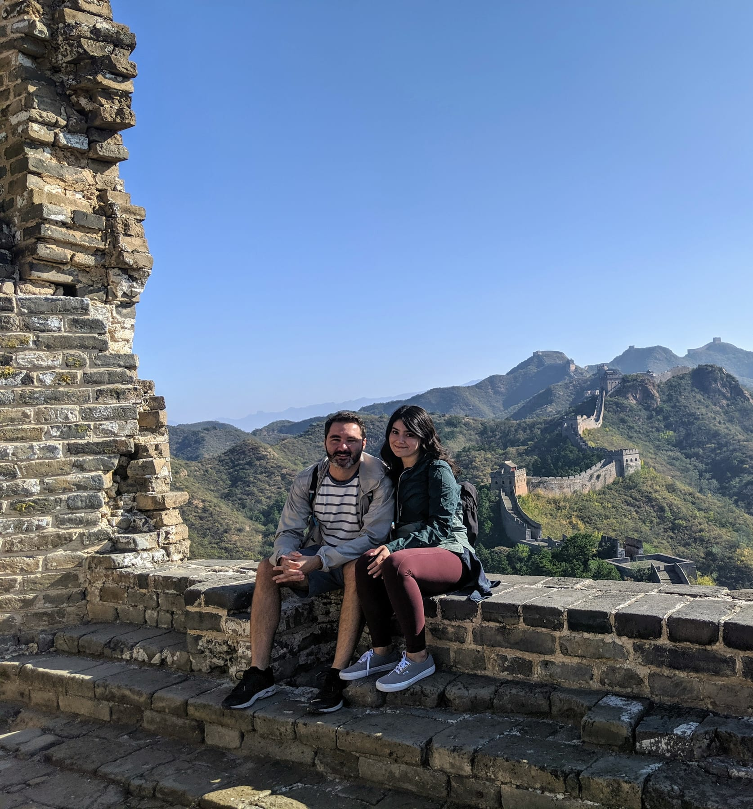
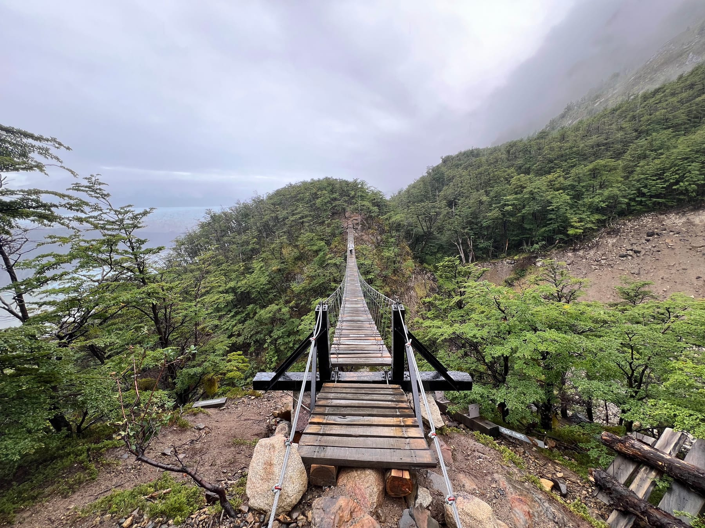

Curious.
Outside.
Building.
I'm James. I live in Seattle with my wife, kayak whenever the water lets me, and travel whenever the points allow. By day I make data make sense for banks.

I'm James. I live in Seattle with my wife, kayak whenever the water lets me, and travel whenever the points allow. By day I make data make sense for banks.




My first real job was in collegiate athletics at UCF: a student section brand called The Knightmare, ticket sales, and the dashboards that told us how we were doing. Then sports consulting. Then banking technology. Then my own tools.
The pattern took me a while to notice. The data usually exists. What's missing is someone willing to make it legible.